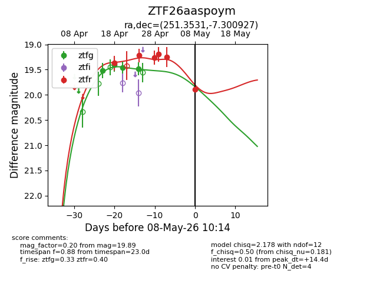
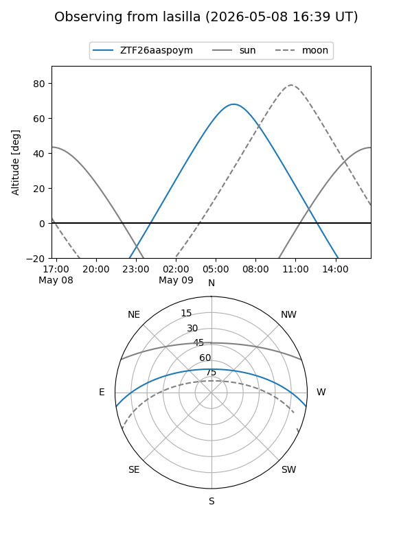
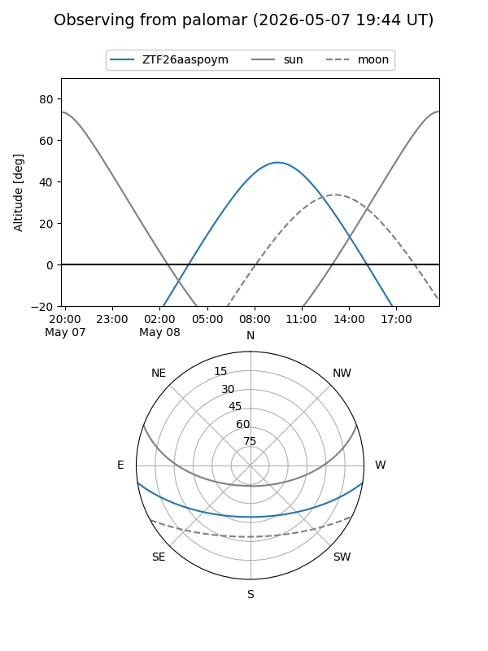
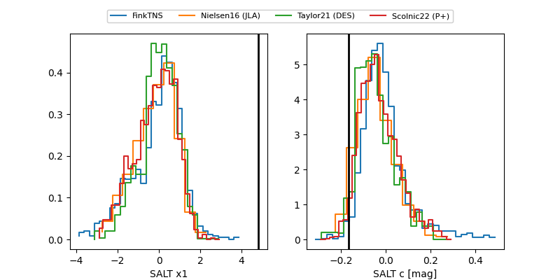

ZTF26aaspoym
Target ZTF26aaspoym at 2026-05-08 10:16
Aliases and brokers:
FINK: link
Lasair: link
ALeRCE: link
alt names
ZTF26aaspoym (ztf,fink_ztf)
Coordinates:
equatorial (ra, dec) = 251.3531,-7.30093
equatorial (HMS+DMS) = 16:45:24.74,-07:18:03.34
galactic (l, b) = (10.4797,+23.78995)
Flags:
Photometry:
last ztfg=19.49, ztfr=19.89
4 ztfg, 6 ztfr detections
Lightcurve

Visibility


Additional plots
